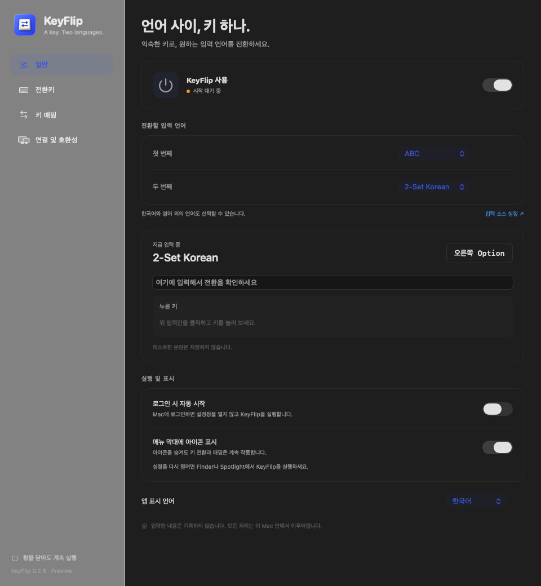
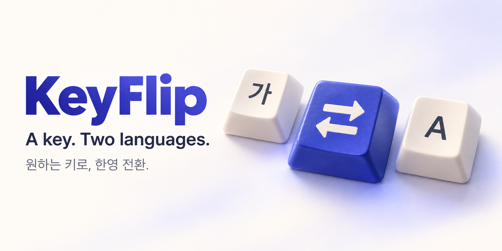

기본 모드01 /
단독으로 눌렀다 놓으면 전환
혼자 누르면 언어 전환. 다른 키와 함께 누르면 원래의 조합키 역할을 합니다. 익숙한 단축키를 함께 쓰고 싶을 때 선택하세요.
단독 탭 → 언어 전환 · 조합 → 원래 단축키
오른쪽 Option을 톡. 한국어에서 영어로.
KeyFlip은 손에 익은 키로 두 입력 언어를 전환하는
작은 Mac 앱입니다.
Apple 공증 전 빌드입니다. 최초 실행 안내
웹 미리보기입니다. Mac의 입력 언어는 바뀌지 않습니다.
SMALL APP. EVERYDAY DIFFERENCE.
전환할 두 언어를 선택하고, 익숙한 키를 지정하세요. 설정 창을 닫아도 KeyFlip은 메뉴 막대에서 계속 동작합니다.
테스트 입력칸에서 입력 언어와 마지막 키, 조합, 매핑 결과를 함께 확인합니다.
로그인 시 자동 시작과 메뉴 막대 아이콘 표시를 원하는 대로 선택합니다.
macOS에 추가한 입력 소스 중 두 개를 선택할 수 있습니다. 앱도 한국어와 영어로 제공됩니다.

YOUR KEY. YOUR WAY.
단축키도 쓰는 키인지, 언어 전환만 하는 키인지.
키의 역할부터 분명하게 선택하세요.
혼자 누르면 언어 전환. 다른 키와 함께 누르면 원래의 조합키 역할을 합니다. 익숙한 단축키를 함께 쓰고 싶을 때 선택하세요.
키를 놓기 전에 다음 글자를 입력하는 습관이라면, 전환 전용키로 사용하세요. 이 모드에서는 지정한 키의 조합키 기능을 사용하지 않습니다.
MAKE ROOM FOR YOUR KEYBOARD
좌우 Option, Command, Control, Shift를 각각 매핑하세요. 키 개수에 맞는 프로필에 설정을 저장하고 직접 선택해 사용할 수 있습니다.
키보드 모델 자동 감지는 제공하지 않습니다.
Caps Lock과 Fn/Globe는 직접 등록·매핑에서 제외됩니다.
키 매핑 예시 · 프로필은 직접 선택합니다
BEYOND ONE DESKTOP
원격 Mac과 가상 OS, 시뮬레이터는 키를 받는 방식이 다릅니다. KeyFlip은 환경별 설정과 원래 키 전달 옵션을 제공합니다.
현재 개발 미리보기입니다. 실제 원격 연결·가상 OS·기기 입력 및 Karabiner 규칙 조합은 아직 검증되지 않았습니다.
제어받는 Mac에서 실행하고, 도착하는 키를 추가 전환키로 등록하세요. 확인된 Chrome 원격 입력에는 로컬 매핑을 다시 적용하지 않아 이미 변환된 Command 조합을 유지합니다.
기본으로 원래 키를 가상 OS에 전달합니다. Windows 한국어 입력기와 오른쪽 Option → 오른쪽 Alt 전달 설정을 함께 확인하세요.
기기 키보드 전환, Mac 입력 소스 전환, 원래 키 전달 중 환경에 맞는 방식을 선택합니다. 기기에 사용할 언어와 하드웨어 키보드를 설정하세요.
장치를 점유하거나 Karabiner 설정을 수정하지 않습니다. 같은 키의 언어 전환 규칙은 한쪽 앱에서만 사용하세요.
READY WHEN YOU ARE
다운로드한 ZIP의 압축을 풀고 KeyFlip.app을 응용 프로그램 폴더에 옮긴 다음 실행합니다.
시스템 설정 → 개인정보 보호 및 보안 → 손쉬운 사용에서 KeyFlip을 허용합니다.
입력 소스 두 개를 선택하고 오른쪽 Option을 눌렀다 놓아 보세요. 테스트 입력칸에서 키와 전환을 확인합니다.
A FEW GOOD QUESTIONS
macOS 키보드 → 텍스트 입력 → 편집에서 Caps Lock 언어 전환 옵션을 끄세요. KeyFlip은 이 시스템 설정을 자동으로 바꾸지 않습니다. 앱에는 별도로 Caps Lock 인식 지연을 줄이는 선택 옵션이 있으며, 해제하면 이전 값을 복원합니다.
아니요. macOS에 추가한 입력 소스 중 두 개를 선택할 수 있습니다. 원하는 언어가 목록에 없다면 먼저 macOS 키보드 설정에서 추가하세요.
입력 내용과 키 이벤트 이력을 저장하거나 외부로 전송하지 않습니다. 설정과 선택한 키 코드는 Mac에 저장합니다. 테스트 입력칸은 포커스가 있는 동안 마지막 키만 표시하고, 포커스가 사라지면 지웁니다.
Finder나 Spotlight에서 KeyFlip을 다시 실행하면 설정 창이 열립니다. 설정 창을 닫아도 키 처리는 계속됩니다. 자동 시작은 Mac의 사용자 로그인 이후 동작합니다.
현재 다운로드는 macOS 13 이상을 위한 Apple Silicon(arm64) 빌드입니다. Intel용 파일은 제공하지 않습니다. 보안 입력이 활성화된 경우와 로그인 화면에서는 키 처리가 제한됩니다.

ONE LESS THING TO THINK ABOUT